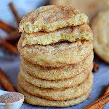

Gluten Free Snickerdoodle Cookies

Description:
Perfect gluten-free snickerdoodle cookies.
Soft on the inside and crispy on the edges, with a great cinnamon taste!
Ingredients:
- All purpose flour - 1.5 cups
- Baking powder - 1 tsp
- Salt - 1/4 tsp
- Butter - 1/2 cup
- Egg - 1
- Cinnamon - 1.5 tsp
Instructions:
- Preheat the oven to 350 degrees F.
- Mix baking power, flour, and salt in a bowl.
- Whish butter and sugar (best using an electric mixer) until soft.
- Mix egg into the sugar and butter mixture, and slowly add flour mixture.
- Shape dough into balls.
- Roll dough in cinnamon and sugar mixture.
- Bak for 15 minutes and enjoy!